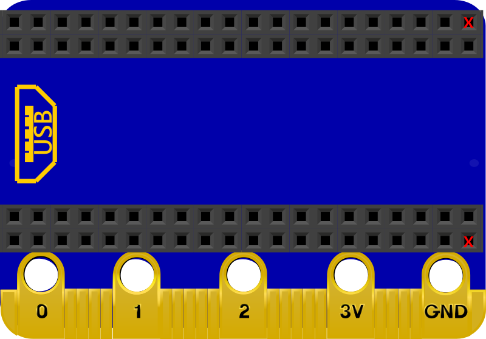

KSB072 ESP32/Pico to micor:bit Board
簡介
KSB072 ESP32/Pico to micor:bit 擴展板

Pico 使用 KSB072 擴展板
ESP32 使用 KSB072 擴展板
本產品最主要特色，可以讓 Raspberry Pi Pico 或 ESP32 NodeMcu-32S 主板 透過 KSB072 ESP32/Pico to micor:bit 擴展板 使用micro:bit 相關的擴展板或套件，省去再購買相關套件的費用
產品規格
- Micro:bit Edage
- Raspberry Pi Pico 插座
- ESP32 NodeMcu-32S 插座
- 尺寸：51.6mm x 36mm
腳位說明
| micro:bit | ESP32 | PICO |
|---|---|---|
| P0 | IO26 | GP3 |
| P1 | IO33 | GP27 |
| P2 | IO32 | GP28 |
| P3 | IO35 | GP12 |
| P4 | IO4 | GP26 |
| P5 | IO14 | GP2 |
| P6 | IO16 | GP5 |
| P7 | IO17 | GP14 |
| P8 | IO27 | GP8 |
| P9 | IO13 | GP17 |
| P10 | IO2 | GP16 |
| P11 | IO25 | GP19 |
| P12 | IO15 | GP18 |
| P13 | IO18 | GP6 |
| P14 | IO19 | GP4 |
| P15 | IO23 | GP7 |
| P16 | IO5 | GP9 |
| P19 | IO22 | GP21 |
| P20 | IO21 | GP20 |
ESP32 NodeMcu-32S 插入 KSB072 擴展板時請靠左插入，最右一格沒有使用
基本範例
還沒有設定ESP32 Arduino開發環境，請參考
還沒有設定Raspberry Pi Pico Arduino開發環境，請參考